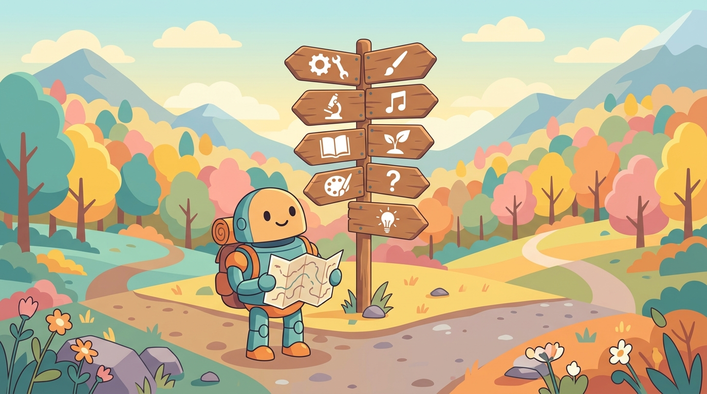

Eight curated pathways, classified by goal: "ship a RAG bot in a weekend" is a different journey than "build a coding agent that passes SWE-bench." Each pathway names the skill you'll have at the end and the chapters that get you there, with a realistic time estimate.
Estimates assume comfortable Python, willingness to skim, and reading on a laptop rather than a phone. Add 30-50% for hands-on lab time. Halve them if you only need the concepts and not the code.
The Eight Pathways
1. RAG Engineer (weekend)
Goal: Stand up a question-answering RAG system over your own documents that you can actually ship.
Time: 8–12 reading hours; 6–10 lab hours. Doable in one weekend.
What you can do at the end: Chunk a document corpus, embed it, store the vectors, retrieve relevant chunks, ground LLM answers in them, evaluate the result, and deploy behind a streaming endpoint.
- Chapter 13 (LLM APIs) · 1 hr · so you can call a model
- Chapter 14 (Prompt Engineering) · 2 hr · so the calls produce useful output
- Chapter 22 (Embeddings & Vector DBs) · 2 hr · so retrieval works
- Chapter 23 (RAG) · 3–4 hr · the main event
- Section 34.1 (Eval fundamentals) · 1 hr · so you know if it works
- Optional: Section 35.1 (Deployment) · 1 hr · so you can ship it
Skip: Parts I (Foundations) and II (Understanding LLMs) entirely. You don't need to know how Transformers work to ship a RAG system; come back later when curious.
2. Agent Builder (2 weeks)
Goal: Build an autonomous agent that uses tools, recovers from errors, and could plausibly run in production.
Time: 20–28 reading hours; 15–25 lab hours. Two part-time weeks or one full-time week.
What you can do at the end: Design an agent loop, expose tools via function calling (or MCP), handle multi-step planning, recover from failed tool calls, sandbox dangerous operations, and instrument the whole system with traces and cost guards.
- Chapter 13 (LLM APIs) · 1 hr
- Section 14.2 (Reasoning + ReAct) · 2 hr
- Chapter 26 (Agent Foundations) · 4–5 hr
- Chapter 27 (Tool Use & MCP) · 3–4 hr
- Chapter 28 (Multi-Agent) · 2 hr (skim; most "multi-agent" is one good agent in a wig)
- Chapter 29 (Specialized Agents) · 3 hr (read the agent type closest to your use case)
- Chapter 25 (Agent Safety & Production) · 4 hr (don't skip this; it's the difference between a demo and a deployment)
- Chapter 34 (Eval) · 2–3 hr
Skip: Part I, Part IV (training), most of Part IX (strategy). You can ship an agent without training a model.
3. ML Practitioner Transitioning to LLMs (~10 days)
Goal: You know classical ML (scikit-learn, maybe PyTorch). You want to be productive with LLMs without unlearning your existing skills.
Time: 25–35 hours over 1–2 weeks.
What you can do at the end: Translate "I would have used XGBoost for this" into "should I use prompting, RAG, fine-tuning, or stay with XGBoost?" Defend your answer in a design review.
- Chapter 0 (ML + PyTorch foundations) · 2 hr (refresher; skim if you already know it)
- Chapter 3 (Attention) · 2 hr
- Chapter 4 (Transformer Architecture) · 4 hr (do the 300-line lab; this is where the lightbulb turns on)
- Chapter 7 (Pretraining + Scaling Laws) · 3 hr
- Chapter 8 (Modern LLM Landscape) · 2 hr
- Chapter 15 (Hybrid ML+LLM) · 3 hr (this chapter is for you specifically)
- Chapter 18 (Fine-tuning Fundamentals) · 4 hr
- Chapter 19 (PEFT) · 3 hr (LoRA is the rosetta stone for ML ↔ LLM transfer)
- Chapter 34 (Evaluation) · 2 hr
Skip: Parts VI–VII unless agents/multimodal are on your roadmap.
4. Researcher / Graduate Student (semester)
Goal: Build a strong enough foundation to read current LLM papers without effort and identify a feasible thesis topic.
Time: 60–80 reading hours plus paper reading, lab work, and discussion sections. Plan around a semester course.
What you can do at the end: Read an arxiv paper from this year, identify the contribution, judge whether the claim holds up, and reproduce a small version of the experiment.
- Full Part I (Chapters 0–5) · 12–15 hr (no shortcuts; you'll need this)
- Full Part II (Chapters 6–9 + 31) · 14–18 hr (this is the meat)
- Chapter 11 (Interpretability) · 4 hr (now part of Part II)
- Full Part IV (Chapters 13–16) · 10–12 hr
- Chapter 33 (Emerging Architectures & Frontiers) · 6–8 hr (thesis-topic gold mine)
- Section 34.11 (Research Methodology for LLM Papers) · 2 hr (seriously, read this before you publish)
Skip: Parts VIII–IX (Production / Strategy) unless your research has industrial co-authors.
5. Interpretability & Safety Specialist (3–4 weeks)
Goal: Develop the toolkit to explain why a model produced a specific output, and to red-team agent systems for failure modes.
Time: 35–45 reading hours.
What you can do at the end: Run a probing classifier, visualize attention patterns, identify induction heads in a small model, sketch a sparse autoencoder for feature discovery, design a red-team test suite for a production agent.
- Chapter 4 (Transformer Architecture) · 4 hr
- Chapter 7 (Pretraining) · 3 hr
- Chapter 11 (Interpretability) · 8–10 hr (the heart of this pathway)
- Chapter 25 (Agent Safety) · 5 hr (prompt-injection, sandboxing, blast-radius)
- Chapter 37 (Safety, Ethics & Regulation) · 6 hr (red-teaming frameworks, privacy attacks)
- Section 33.7 (Mechanistic interpretability at scale) · 3 hr
Skip: Parts III, V, VII unless they directly inform your safety surface.
6. Founder / Product Manager (1 week)
Goal: Make defensible decisions about what to build with LLMs, what to buy vs. build, and how to ship it without setting fire to the unit economics.
Time: 12–18 reading hours. One focused week.
What you can do at the end: Read a model card and judge whether it fits your use case. Estimate token cost per user-task. Decide build vs. buy. Defend "we'll use Claude, not GPT, for this workflow" with reasons.
- Chapter 8 (Modern LLM Landscape) · 2 hr
- Section 14.1 (When prompting is enough) · 1 hr
- Section 18.1 (Fine-tune-or-not decision tree) · 1 hr
- Chapter 27 (LLM Applications by Industry) · 2 hr (skim; read the section closest to your space)
- Chapter 31 (Strategy, PM & ROI) · 4 hr (this whole chapter is for you)
- Chapter 45 (Building LLM and Agent Products) · 2 hr
- Chapter 48 (Shipping & Scaling) · 2–3 hr
Skip: Parts I, II, IV, VI (technical depth). Loop back if a specific decision needs it.
7. Course Instructor (1 month)
Goal: Build a 12–14 week graduate or upper-undergraduate course around this book.
Time: 30–40 reading hours to design the syllabus; ongoing for teaching.
What you can do at the end: Hand out a syllabus on day one that draws from the right chapters, with labs that match each week's content.
- FM.7 Copyright & Legal · 1 hr (this exists; start here)
- Appendix P (Course Syllabi) · 2 hr (syllabus templates for five course tracks)
- Full Part I (Chapters 0–5) · 12–15 hr (the first half of the course)
- Selected chapters per topic · 12–18 hr (pick depth of coverage based on course goal: research-leaning → Part II + IV + X; engineering-leaning → Parts III + V + VI + VIII)
- Every chapter's end-of-chapter exercises, mine for homework problems
Skip: Nothing on first pass. Cross-reference what your students will actually use after graduating.
8. The Curious Generalist (a long weekend)
Goal: Get the conceptual sweep of the field without committing to building anything yet.
Time: 6–10 hours.
What you can do at the end: Hold an informed conversation about LLMs at a dinner party. Distinguish hype from substance. Know which deeper rabbit hole to fall down next.
- Foreword · 15 min
- Chapter 8 (Modern LLM Landscape) · 2 hr (read for the lay of the land)
- Chapter 9 (Reasoning Models) · 2 hr (the most "what's new" topic)
- Chapter 26 (Agent Foundations) · 2 hr (skim)
- Chapter 33 (Frontiers) · 2 hr (the "where this is going" chapter)
Skip: All code blocks. Skim, don't write.
How to Choose a Pathway
Do you have a deadline? Pick pathway 1 (RAG) or 2 (Agent) for the fastest route to a shipped artifact.
Do you have classical ML chops? Pathway 3 minimizes overlap with what you know.
Are you in school? Pathway 4 (Researcher) or 7 (Instructor) depending on which side of the lectern.
Are you a founder/PM? Pathway 6.
Just curious? Pathway 8.
Working in trust & safety? Pathway 5.
Combine Pathways
The pathways are not exclusive. Pathway 1 (RAG) plus pathway 2 (Agent) is the natural sequence for someone building agentic RAG products. Pathway 3 (ML transition) plus pathway 6 (Founder) is the right sequence for an experienced data leader who is now founding an AI company.
The chapters appear once in the book regardless of how many pathways visit them. Reading the same chapter for two pathways is fine; cross-references within each chapter assume you may arrive in any order.